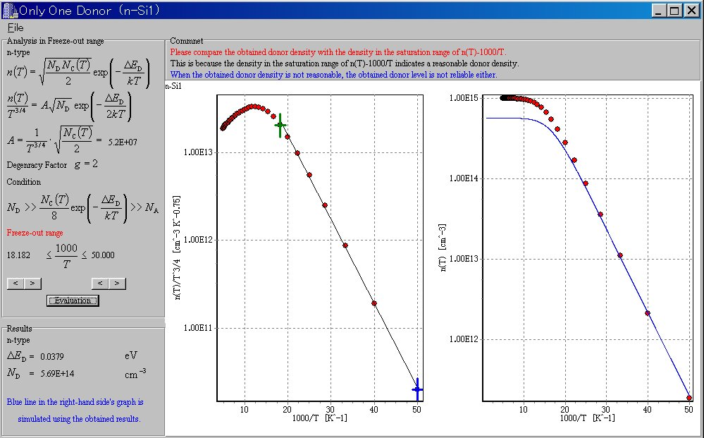
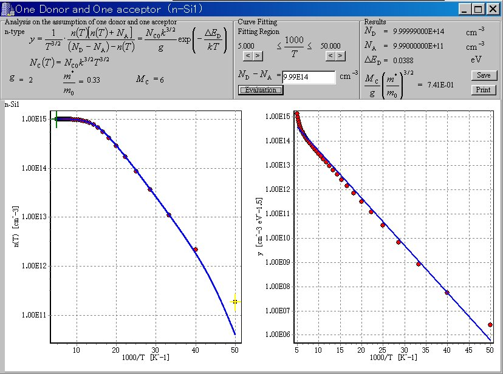
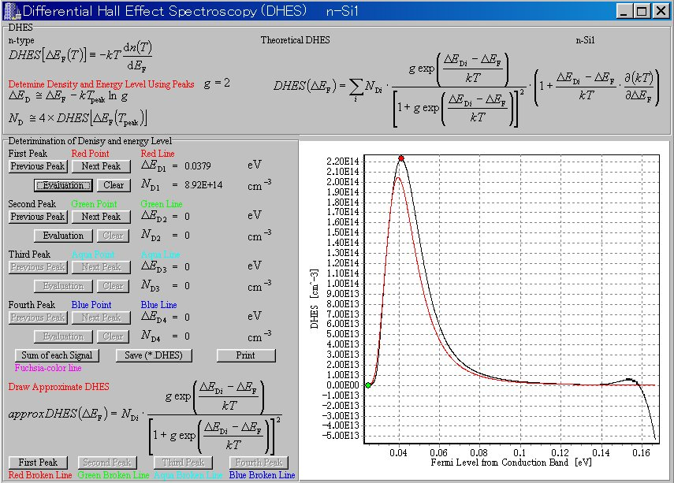

How to use the application
6. Other Analyses
After you load or save the "*.fl" file, you can use the "Other Analyses" button.
In the case of only one dopant

In the case of one donor and one acceptor

Differential Hall-Effect Spectroscopy
